AS198383
AS198383
SkyInfo Networks
BGP.Tools | BGP.he.net | PeeringDB
Hey there! Thanks for visiting by.
I'm the proud owner of AS198383 - A Network that I use for personal and educational purposes.
It's a cool way to learn about networking and routing on the internet.
My ASN is IPv6 only, which means it uses the latest Internet protocol version.
It is also the first ever Personal ASN from Kerala, India.
If you want to know more about me or my ASN, feel free to contact me anytime.